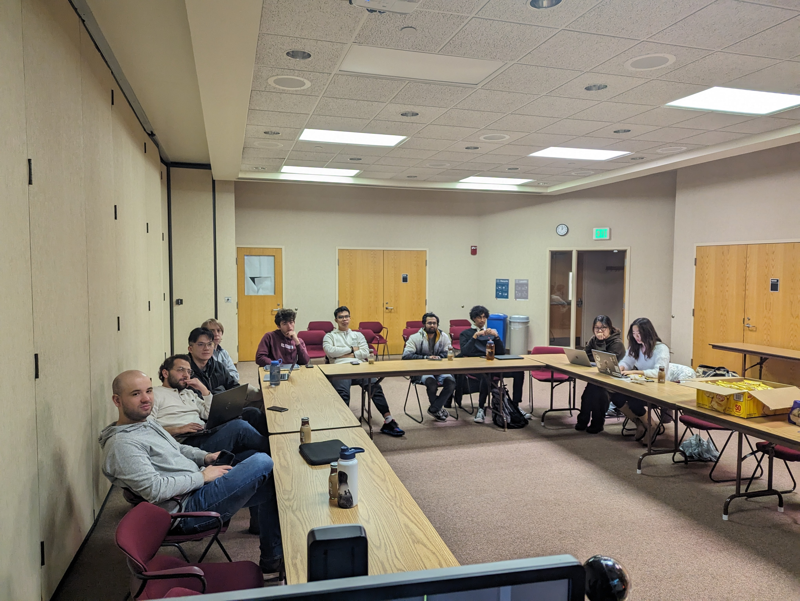
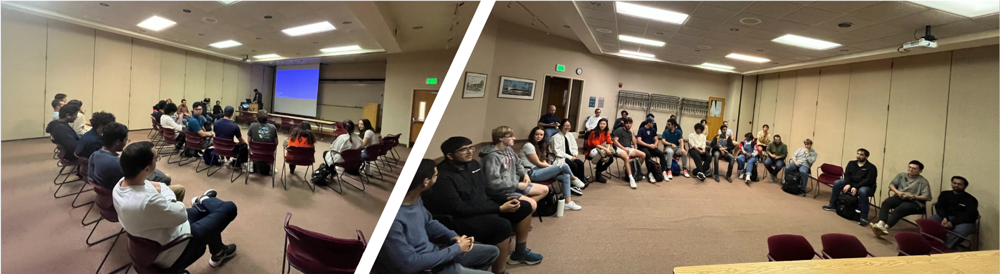
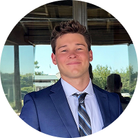
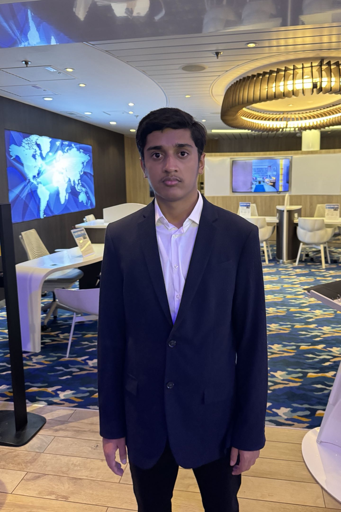
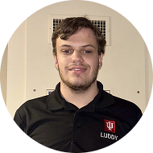

Prof. Lantao Liu
Faculty advisor, VAIL Lab
Leading research in robotics and autonomous systems at Indiana University.

IU-Luddy Autonomous Racing comprises a diverse group of passionate students from Indiana University, spanning PhD, Master's, and undergraduate programs. With expertise and interest in various facets of the autonomy stack—ranging from perception to planning to control—we are dedicated to developing and implementing cutting-edge technology for the fastest fully autonomous racing car.
Our journey began in August 2023 with just 8 PhD students. Led by Prof. Lantao Liu, head of the VAIL Lab, the team quickly expanded to a cohesive team of 28 members, each specializing in different aspects of the autonomy stack.
At IU-Luddy Autonomous Racing, we firmly believe that autonomous racing serves as a catalyst for advancing autonomous technology, leading to safer and more sophisticated self-driving cars. Motorsport has historically served as a breeding ground for pioneering automotive technologies, and we are committed to pushing these boundaries further.
We are dedicated to advancing research across various facets of the autonomy stack, including perception, planning, and control modules. By pushing the boundaries of innovation in these areas, we aim to contribute significantly to the progress of autonomous driving technology.
We are committed to offering our students an exceptional opportunity to apply their skills to real-world problems. Through hands-on experience and immersive projects, we empower our members to develop practical solutions and gain invaluable insights into the field of autonomous driving.
Our ultimate goal is to become world champions in Autonomous Racing competitions. By continuously refining our techniques, leveraging cutting-edge technology, and fostering a spirit of collaboration, we aspire to compete against and surpass the best AI teams in the world.
To dive deeper into IU-Luddy Autonomous Racing and our journey in the Indy Autonomous Challenge, you can read a recent feature from the Luddy School highlighting our progress, results, and goals.
The people behind IU-Luddy Autonomous Racing.

Faculty advisor, VAIL Lab
Leading research in robotics and autonomous systems at Indiana University.
Ph.D. in Computer Science
I am a PhD student who spends my days diving into theoretical computer science, building AI models, and staring at PyTorch errors until they magically disappear
M.S. in Computer Science
Focus on perception, planning, and bringing ideas to the track.
M.S. in Data Science
Engineering leader and full stack developer with experience building web applications, managing technical teams, and solving business problems with software.
M.S. in Computational Science
Trying to make sense of the world one problem, one experiment, and one coffee at a time.
M.S. in Data Science
Helping cars make better decisions than I do
B.S. in Informatics
I am passionate about automotive systems, with a strong interest in both the mechanical engineering behind vehicle performance and the software and data analytics that drive modern automotive innovation.

B.S. in Intelligent Systems Engineering
Building the best autonomous racing car
B.S. in Computer Science
I enjoy drifting cars because sometimes the fastest way through life's turns is sideways with a little tire smoke and questionable decision-making.
B.S. in Data Science
Turning telemetry and models into actionable insight for the team.
B.S. in Informatics
Hi, I’m Jack DeWitt, an Informatics student at Indiana University with a passion for motorsports and racing technology. I work on vehicle dynamics and data analysis for the team to help improve performance and decision-making on track.
B.S. in Informatics
I have had 25 ThinkPad laptops concurrently, and have probably gone through over a hundred of them - very fitting for the president of Linux Users Group.
B.S. Finance, Accounting
I used to race in the American E-Kart championship and I am passionate about motorsport, cars, and robotics.
B.S. in Intelligent Systems Engineering
I am very outgoing and like to take on any challenge.
B.S. in Data Science and M.S. in Data Science
I’m happiest outside, unless I’m locked into a project and accidentally forget the sun exists.

B.S. in Computer Science
Stick is the only way
B.S. in Informatics
I'm a user experience designer passionate in building websites, playing video games, and taking photographs

B.S. in Computer Science
Youngest of 3 brothers, all IU students
B.S. in Computer Science
Cheesecake.